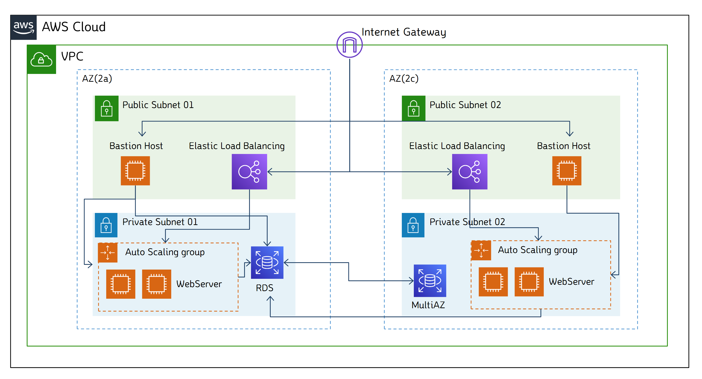

3-Tier 기본 인프라 구성
개념도

TODO
- [x] VPC생성
- [x] 서브넷생성(public X 2, private X 2)
- [x] public서버에 각각 bastion host 인스턴스 생성
- [x] ELB생성후 Auto Scaling 연계 → 웹 서버 인스턴스 자동생성(2~6개)
- [x] HOST → WebServer 접속 확인
- [x] RDS DB생성(MySQL)
- [x] HOST → Bastion Host → DB 접속 확인하기
- [x] MySQL Workbench 연결 (SSH 터널링) (SQL IDE)
- [x] Jetbrains DataGrip 연결 (SSH 터널링) (SQL IDE)
VPC
-
VPC 생성

-
서브넷 생성(public 2ea, private 2ea)

-
서브넷 확인

-
퍼블릭서브넷의 public-IP 자동할당 사용


→ 퍼블릭서브넷(총 2개)에 모두 적용
-
라우팅테이블 생성


→ VPC당 IGW는 1개 이므로 public route table은 1개, private route table은 2개 생성
-
IGW 생성

-
IGW를 VPC에 attach

-
Final-Public-RT의 라우트 설정

-
private서브넷에는 NAT gateway 생성 후 할당(요금 발생으로 인해 실습X)
-
라우팅테이블을 서브넷에 연결


→ Final-Public-02도 마찬가지로 Final-Public-RT에 연결
→ Final-Private-01, Final-Private-02 은 각각 Final-Private-01-RT, Final-Private-02-RT 연결
EC2 Instance
-
SSH접속을 위한 Key pair 생성

→ putty 쓰려면 ppk선택(범용성이 떨어져 권장하지 않음)
-
Bastion Host 용 SG(보안그룹) 생성

-
Bastion Host Instance 생성 * 2ea


→ VPC, Subnet, SG 만 알맞게 조절
-
이전에 생성한 키페어 선택

-
같은 작업을 반복하여 Bastion-Host(2c) 생성
Bastion Host 접속
-
Bastion Host(2a)의 public IP 할당을 확인

-
터미널 열어서 키페어파일 위치로 이동 후 다음 명령을 이용하여 접속
ssh -i FINAL-KEY.pem [ec2-user@13.125.83.172](mailto:ec2-user@13.125.83.172) -
SSH 최초 접속시 hash 값 확인 → yes 입력
-
접속 확인(bastion host 정상작동)

ELB 만들기
-
LoadBalancer(internet Facing)를 위한 SG(보안그룹)을 생성해줍니다

→ internetFacing이기 때문에 모든 포트를 오픈해줍니다
-
WebServer를 위한 SG를 생성합니다.

→ 보안그룹체이닝을 이용하여 ELB에게만 HTTP포트를 오픈해줍니다
-
좌측 메뉴의 Load Balancing → Target Groups에서 새로운 Target Group을 생성합니다

→ VPC만 설정하고 다른 부분은 기본값으로 진행합니다
-
일단 인스턴스 추가 없이 생성합니다

-
Load Balancing → Load Balancers에서 새 LB를 생성합니다

-
Internet-Facing LB 이므로 퍼블릭서브넷에 생성해줍니다

-
이전에 생성해둔 LB용 SG를 선택합니다

-
Target Group도 사전에 만들어둔 TG-21-01-12를 선택합니다

Auto Scaling
-
EC2 좌측 메뉴 Auto Scaling → Launch Configuration 에서 새로 작성합니다

-
이름을 할당하고 AMI를 선택해줍니다. 미리 만들어둔 AMI가 없으면 새로 만들면 됩니다

→ 웹 서버용 SG를 선택하고 키페어도 연결해줍니다
-
좌측메뉴 Auto Scaling Groups을 진입하고 Create Auto Scaling Group을 클릭합니다

-
오토스케일러 이름을 할당하고 Launch Configuration을 선택해줍니다.

→ 목록에 안 보이면 밑줄 친 부분을 누르면 됩니다
-
오토스케일을 적용할 서브넷(private)을 선택합니다

-
이 전에 만들어둔 로드밸런서를 사용합니다

-
목표, 최소, 최대 인스턴스 개수와 스케일링 정책을 작성합니다

-
스케일러에 의해 시작된 인스턴스에 붙일 태그를 작성합니다

-
EC2 인스턴스에 들어가보면 2-4의 목표값인 '2개'만큼 인스턴스가 실행되어있습니다

-
ELB의 DNS 주소를 찾아봅니다

-
해당 DNS주소에 접속하면 웹서버로 진입할 수 있습니다
-
사전에 생성해둔 서버 화면이 표시됩니다.

→ 화면에선 AZ 메타정보(2a)를 확인해볼 수 있습니다
-
라운드로빈 방식의 LB이기 때문에 접속을 할 때 마다 서버가 변경됩니다.
새로고침을 하면 다른 AZ(2c)의 웹서버에 접속된 걸 확인할 수 있습니다.

Bastion Host → 웹 서버 접속
-
SSH로 Bastion host에 접속합니다

-
PEM키 파일을 Bastion 에 다운로드합니다
단순 실습을 위해 AWS S3에 업로드 후 wget을 이용하여 다운로드 하였습니다
나중에 현장에서 이렇게 일 하면 안됩니다

-
Webserver SG에 bastion host 를 위한 SSH 포트를 개방합니다
체이닝된 source SG는 FINAL-SG-Bastion입니다

-
스케일러에 의해 생성된 서버의 내부 IP를 찾습니다

-
Bastion의 터미널에 다음과 같은 명령으로 Webserver에 접속합니다
ssh -i FINAL-KEY.pem ec2-user@10.77.3.93 -
다음 에러 발생시 chmod를 적용합니다

chmod 400 FINAL-KEY.pem -
재접속 하면 정상적으로 WebServer에 연결된 것을 볼 수 있습니다

RDS(MySQL)
-
DB서버를 위한 SG를 생성합니다
BastionHost와 WebServer에서 3306포트를 접속할 수 있도록 SG체이닝을 넣어줍니다

-
AWS RDS페이지에서 DB에 사용할 서브넷 설정을 생성합니다.
DB는 private 서브넷에 상주하는 것을 생각하고 알맞게 체크하면 됩니다.

-
AWS RDS페이지에서 Create database를 선택합니다

-
MySQL을 선택합니다
학습용이니 하단의 Free Tier제한 옵션도 선택해줍니다

-
subnet, SG를 잘 선택해주고 DB관련한 값을 알맞게 적어줍니다
/*
DB식별자 : dbdb(x) → mydb
Master User : DBadmin
Password : DB-password
DatabaseName : lab
*/


DB동작 확인
-
SSH를 이용해 Bastion Host에 접속합니다.

-
다음 명령을 이용해 Bastion Host에 MySQL을 설치합니다
sudo yum -y install mysql -
서버접속을 위해 다음 명령을 이용해 MySQL 을 사용합니다
mysql -h {DNS} -P {PORT} -u {USER} -p ↓(예시) mysql -h mydb.cnr20hoyd3cu.ap-northeast-2.rds.amazonaws.com -P 3306 -u DBadmin -p -
'MySQL>' 이 뜨면 접속 성공한 것입니다

MySQL workbench
-
MySQL Workbench 다운로드 & 실행
-
Basiton Host 사용시 아래와 같이 입력

-
올바르게 작성된 예시

-
OK누르면 비밀번호 입력창이 뜹니다

-
접속 완료하였습니다

Jetbrains DataGrip
-
DataGrip을 실행합니다

-
MySQL 연결을 새로 만듭니다

-
SSH를 선택하고 터널링 설정을 엽니다

-
BastionHost의 정보를 입력해줍니다

-
General로 돌아와서 host, port, User, password 입력합니다

-
접속에 성공하였습니다